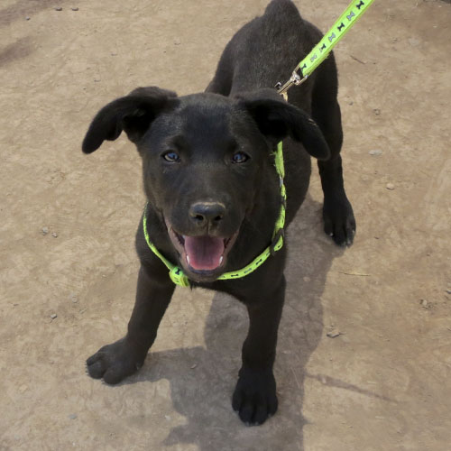

PERRITOS EN ADOPCIÓN

LIZA

- Edad: 4 años
- Sexo: Hembra
- Tamaño: Mediana
- Vacunas al dia.
- Esterilizada.
- Familia ideal: Familia que haya tenido anteriormente perros. Puede convivir con machos y gatos. Niños mayores de 10 años.
MILI
- Edad: 2 años
- Sexo: Hembra
- Tamaño: Pequeña - Mediana
- Vacunas al dia.
- Esterilizada.
- Familia ideal: Para todo tipo de familias.
MCIVER

- Edad: 4 años
- Sexo: Macho
- Tamaño: Mediano
- Vacunas al dia.
- Esterilizado.
- Familia ideal: Para todo tipo de familias.